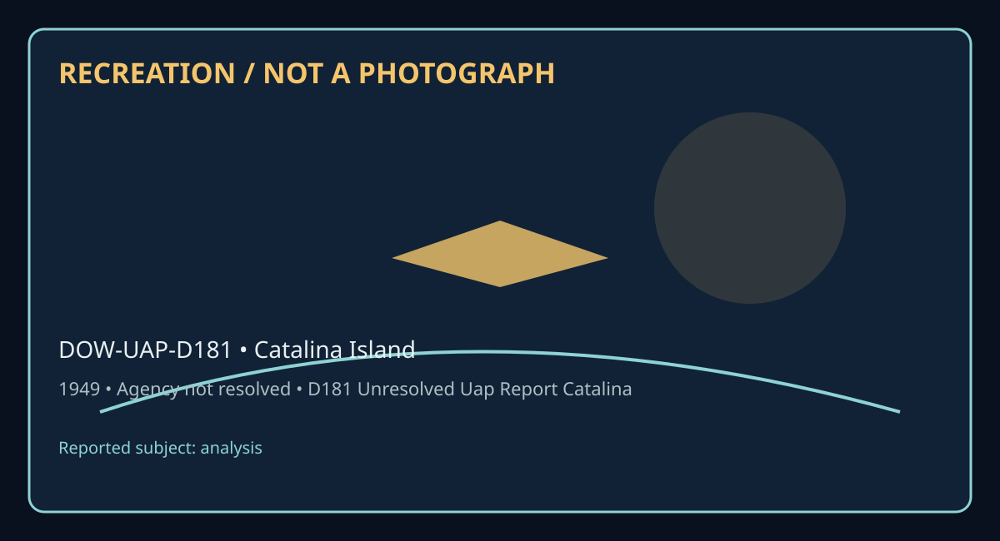

Release 07 / archival case file / DOW-UAP-D181
D181 Unresolved Uap Report Catalina Island 1949
This d181 unresolved uap report catalina places a analysis thread in a 1949 Catalina Island record.
ID: DOW-UAP-D181
Filename:
DOW-UAP-D181_Unresolved_UAP_Report_Catalina_Island-1949.pdfDate marker: 1949
Location: Catalina Island
Agency or collection signal: Agency not resolved
Pages read: 3

RECREATION / NOT A PHOTOGRAPH. The diagram is an interpretive editorial aid, not source imagery.
What this document says
The opening page's extracted text begins: “PROJECT 10073 RECORD 1. DATE • TIME GROUP 28 April 4'1 J. SOURCE Civilian LOCATION Catalina Island, Call.!omia 10, CONCLUSION INSUFFICllNT DATA FOR EVAllJATIOO 11. BRIEF SUMMARY ANO ANALYSIS Observer sif!tlted six objects. Each fiev by alone. Authority: NND 923007 .._ HUMBER OF OBJECTS Six S. LENCTH OF OBSERVATION Not Reported 6. TYPE OF OBSERVATION Ground-Visual 7, COURSE Not Reported 8. PHOTOS □ Y•• No 9, PHYSICAL EVIDENCE □ Y•• XJ No FORM FTO SEP 6 3 0;329 TOE Pr..l O'Ge ediU""• ot thl• form m• be uud.”
Across the 3 pages, the recurring terms are analysis. Those details belong to this file, not to a generic case template. Page-level reading follows:
- Page 1: PROJECT 10073 RECORD 1. DATE • TIME GROUP 28 April 4'1 J. SOURCE Civilian LOCATION Catalina Island, Call.!omia 10, CONCLUSION INSUFFICllNT DATA FOR EVAllJATIOO 11. BRIEF SUMMARY ANO ANALYSIS Observer sif!tlted six objects. Each fiev by alone. Authority: NND 923007 .._ HUMBER OF OBJECTS Six S. LENCTH OF OBSERVATION Not Reported 6. TYPE OF OBSERVATION Ground-V
- Page 2: CONTROL NO. SUBJECT: lat.IMECIMAL FILE No. ____ F OLLOW UP O N CATE DATED 5 20/49 TO: I s No. I NCLS . l RECORDING DATE / / T-1 RECORDl:D HOURllOO 5 J.6 49 DESK ROUTCD TO SUSPENSE DATE )ESTABLISHED BY IINITIUSII DATE 2 :, DATE o~ RIK,-LY OTHER D I SPOSITION :
- Page 3: • _j ~ -....,l- ?,co~?-1. ~ .......... (1,~~,t\1\/~~ J,J :t.r ~ ~ ~ ~ ' t ' /1 , I ' I
Historical context and disclosure schema
Read in context, this record belongs to the 1949 information environment: Agency not resolved paperwork, a Catalina Island setting, and the reporting conventions visible in the source. Its broader disclosure value is procedural as well as anecdotal: it shows how an observation, material question, investigation, or analytical program was routed, described, and preserved. That makes it comparable to other Release 07 records without collapsing unlike evidence into one event.
Evidence limits
The source establishes that this document exists and records what its authors or quoted witnesses wrote. It does not, by itself, prove the identity, performance, origin, or physical reality of the reported subject. Extraction preserves wording but cannot restore missing attachments, authenticate provenance, or independently validate testimony. Interpretations beyond the page-specific record remain hypotheses.
Source: supplied PDF in research/tranche-07. This article is a research aid, not a claim that the reported object was non-human.